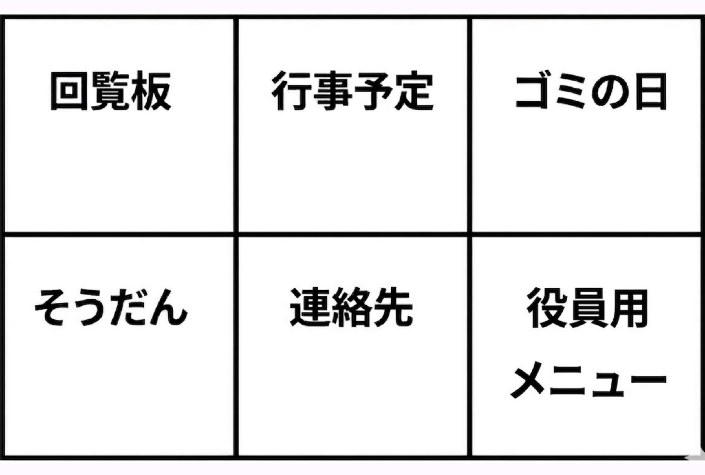

最初に１回だけ、あなたのお住まいを登録します。
画面に数字のボタンが出ます。あなたの「組」を指で押してください。
組を選ぶと、次は「番地」が出ます。同じようにボタンを押してください。
※番地が無い方は、最初の赤いボタンを押してください。
最後に「号」を
百の位 👉 十の位 👉 一の位
の順番で３回押せば完了です！
回覧板やゴミの日など、見たいメニューがパッと開きます。

年に一度の総会（役員改正）の時だけ、画面に特別な「役職を選ぶボタン」が出ます。
総会が終わった後はボタンが押せなくなり、新しく加入した方は自動的に「一般」からのスタートとなります。
（※後から役員になる場合は、事務局が手動で設定します）